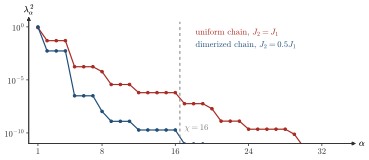

Page 7 of 12 of this session
7.8a Why MPS work in 1D
Why is a fixed and moderate bond dimension enough for a gapped chain of any length? We will now see that an MPS can hold at most \(\log \chi\) of entanglement entropy across a bond. The area law says that a gapped chain needs only a fixed amount, so the two meet.
\[C(s_1,s_2,\dots,s_L) \;\approx\; M^{s_1}_{1}\, M^{s_2}_{2}\, \cdots\, M^{s_L}_{L}, \tag{7.5}\]
\[S_A \;\sim\; \alpha\, |\partial A|, \tag{7.9}\]
The first equation is the matrix product state of Section 7.4, where each coefficient of the state is a product of \(L\) matrices of size \(\chi\times \chi\), and \(\chi\) is the bond dimension. On an open chain the two ends are vectors. The second is the area law of Section 7.7. For the ground state of a gapped and local Hamiltonian, the entanglement entropy of a region \(A\) grows with the size \(|\partial A|\) of its boundary. In one dimension this boundary is one or two points.
The area law is the missing piece that explains why the ansatz (7.5) is a good one. Let us take an MPS at a given bond, and use it to build the Schmidt decomposition of the state for a division of the system at that bond.
\[|\Psi\rangle = \sum_{\alpha=1}^{\chi} \lambda_\alpha\, |\alpha\rangle_A \otimes |\alpha\rangle_B.\]
This sum has at most \(\chi\) terms, because the internal index, also called virtual index, that runs through that bond only takes \(\chi\) values. Therefore the reduced density matrix \(\rho_A = \sum_\alpha \lambda_\alpha^2 |\alpha\rangle_A \langle\alpha|_A\) has rank at most \(\chi\). Among all density matrices with rank \(\le \chi\), the entropy (7.6) is maximal when all the eigenvalues are equal, \(\lambda_\alpha^2 = 1/\chi\), and this gives the bound on the entanglement of an MPS.
An MPS with bond dimension \(\chi\) holds across any bond an entanglement entropy of at most
\[S \;\le\; \log \chi. \tag{7.10}\]
Only \(\chi\) equal Schmidt weights reach this value. A gapped chain longer than its correlation length needs the same \(\chi\) for 50 or for 500 sites, for the same error at each bond. A state with a volume law would need \(\chi\sim2^{L/2}\).
The steps From the rank of the reduced density matrix to the bound (7.10)
We write \(p_\alpha=\lambda_\alpha^2\) for the eigenvalues of \(\rho_A\). They are positive and \(\sum_\alpha p_\alpha=1\), and the entropy (7.6) is \(S=-\sum_\alpha p_\alpha\log p_\alpha\). Let us take the simplest case first, \(\chi=2\), with the two weights \(p\) and \(1-p\),
\[S(p) = -p\log p-(1-p)\log(1-p), \qquad \frac{dS}{dp}=\log\frac{1-p}{p}.\]
The derivative vanishes only at \(p=\tfrac12\), where \(S=\log 2\), and \(S\) goes to zero at \(p=0\) and \(p=1\). So two Schmidt terms hold at most \(\log 2\), which is the singlet (7.7).
For \(\chi\) weights we look for the largest \(S\) with the condition \(\sum_\alpha p_\alpha=1\), and we add it with a Lagrange multiplier \(\mu\),
\[\frac{\partial}{\partial p_\alpha}\Big[-\sum_\beta p_\beta\log p_\beta-\mu\Big(\sum_\beta p_\beta-1\Big)\Big]=-\log p_\alpha-1-\mu=0.\]
This gives the same value for every \(p_\alpha\), so \(p_\alpha=1/\chi\). The second derivative of \(S\) is \(-1/p_\alpha<0\), meaning that this point is the maximum, and its value is
\[S=-\sum_{\alpha=1}^{\chi}\frac1\chi\log\frac1\chi=\log \chi.\]
A density matrix of rank lower than \(\chi\) has fewer nonzero weights, and its largest entropy is the logarithm of its rank, which is smaller. So every MPS of bond dimension \(\chi\) has \(S\le\log \chi\), which is (7.10).
In other words, an MPS with bond dimension \(\chi\) can have an entanglement entropy of at most \(\log \chi\) across any bond, which grows only logarithmically with \(\chi\). Let us compare this with (7.9). A 1D gapped ground state has an entanglement entropy that saturates at a finite value, which does not depend on the size of the subsystem. So a moderate and fixed bond dimension is already enough to describe it with a very small error. This is the quantitative reason why matrix product states are such a good ansatz in one dimension, since the area law limits the same quantity that the bond dimension limits.
Geometrically, we can think of the full many-body Hilbert space as a large set, and MPS describe only a very small part of it, which is the part of area-law states. This part is reached with a bond dimension that stays moderate (\(\chi \sim 10\), \(100\)) as long as we stay in the area-law regime. To reach a general state with a volume law, the bond dimension would have to become very large, \(\chi \sim 2^{L/2}\), which is exponential in \(L\). Figure 7.3 shows this comparison directly. It shows the upper limit \(\log \chi\) given by (7.10) and the entropy that a gapped, a critical and a general state need when the subsystem grows.

The bound (7.10) is reached only if all the Schmidt weights are equal, and in a real ground state they are not. The weights across the central bond of a chain with 16 sites, which we can still solve exactly, are shown in Schematic 7.10. They fall quickly, and they fall faster for the dimerized chain than for the uniform one, as we expect for a gapped state. Keeping the \(\chi\) largest weights therefore gives an almost exact state.

A gapped chain of 50 sites is described accurately with a bond dimension \(\chi\). What do we need for a gapped chain of 500 sites in the same phase?
Show the answers
- A. ✗ False
This is false. The AKLT chain is exact with \(\chi=2\) both for 50 and for 500 sites. The length of the chain does not enter in a gapped state.
- B. ✓ True
This is true. In a gapped state the entropy across a bond is set by the correlation length and not by the length of the chain. The bound (7.10) then asks for the same \(\chi\).
\[S \;\le\; \log \chi. \tag{7.10}\]
- C. ✗ False
This is false. The central bond of the chain of 500 sites has the same entropy as the one of 50 sites, once both are longer than the correlation length. A smaller \(\chi\) would drop weights that the first calculation had to keep.
An MPS has the bond dimension \(\chi=16\). Across one bond its entanglement entropy obeys
\[S\le\log \chi.\]
What is the largest entropy that one bond can hold?
Show the answers
- A. ✗ False
This is false. The entropy of 16 equal weights is \(\log16=4\log2\). The value \(16\log2=\log65536\) would need \(65536\) Schmidt terms.
- B. ✗ False
This is false. The value \(8\log2=\log256\) needs 256 equal Schmidt terms, and the MPS has only 16. The entropy is a logarithm of the number of terms and not a fraction of it.
- C. ✓ True
This is true. The bound \(S\le\log \chi\) is reached when the 16 weights are equal, and \(\log 16=4\log 2\). The number of Schmidt terms is 16 but the entropy grows only as its logarithm.
A cut of a state has four Schmidt weights, \(\lambda_\alpha^2=\tfrac12,\tfrac14,\tfrac18,\tfrac18\). Compute the entanglement entropy and compare it with the bound (7.10) for \(\chi=4\). Then we keep only the two largest weights, which is an MPS with \(\chi=2\) at this bond. Find the weight that we drop.
Solution
The entropy is \(S=-\sum_\alpha\lambda_\alpha^2\log\lambda_\alpha^2\), and each weight is a power of \(\tfrac12\), so every term is a multiple of \(\log 2\),
\[S=\tfrac12\log2+\tfrac14\log4+2\cdot\tfrac18\log8=\Big(\tfrac12+\tfrac12+\tfrac34\Big)\log2=1.75\log2=1.21.\]
The bound for \(\chi=4\) is \(\log4=2\log2=1.39\). The state stays below it, since its four weights are not equal.
With \(\chi=2\) we keep \(\tfrac12\) and \(\tfrac14\), and we drop \(\tfrac18+\tfrac18=0.25\) of the weight. The state that we keep, before we normalize it, differs from the exact one by a vector whose squared norm is this dropped weight. After we normalize it, the square of its overlap with the exact state is \(1-0.25=0.75\). So the error of a truncation is set by the weights that we drop, and not by how close \(S\) is to \(\log \chi\). This is why the fast fall of the weights in Schematic 7.10 is what makes a moderate \(\chi\) enough.
Notebook check-in: session7.ipynb, “Near linear scaling with system size with matrix product states” (Core) and “The role of the bond dimension in tensor networks” (Core)
In the first exercise you check that the cost of the DMRG ground-state calculation in dmrgpy grows linearly with the system size. This is the linear growth in \(L\) of (7.5) and not the \(2^L\) scaling of (7.4). In the second exercise you change the bond dimension and see how the ground-state energy saturates, while its fluctuation keeps becoming smaller. The energy saturates once the Schmidt weights that \(\chi\) drops are negligible, and this happens well above the smallest \(\chi\) that the bound (7.10) allows.
Try it. Run the loop over maxm in [2,4,8,20] and look at the bond entropy. For maxm=2 the curve cannot go above \(\ln 2\approx0.69\), while for maxm=20 it follows the true ground state. Check that the largest entropy sits on the two bonds next to the central bond, and not on the central bond itself.
- In Section 7.8b the same bound (7.10) tells us where MPS fail, in long-time dynamics and in two dimensions.
- In Section 7.10 DMRG optimizes the MPS at a fixed bond dimension, and the error of the energy stops at a level set by \(\chi\).
- In Section 10.3b matrix product states are the innermost family of the variational states of the course, inside PEPS and neural network quantum states.